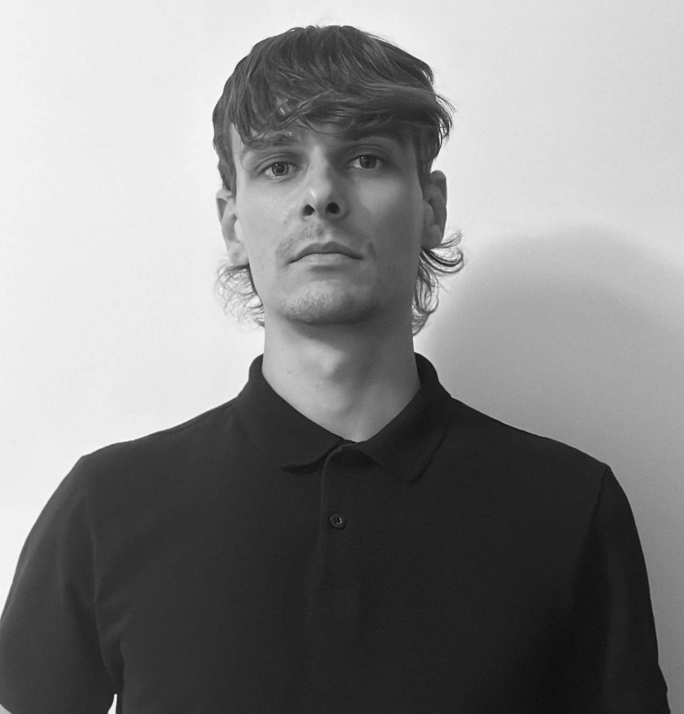

Tenho 29 anos. Sou formado em mecatrónica automóvel, área onde exerci durante 9 anos. Neste período desenvolvi competências como trabalho em equipa, gestão de tempo, organização e resiliência. Atualmente, decidi embarcar numa empolgante jornada no mundo da programação, e frequentar o Bootcamp do Bytes4Future. Penso que o meu entusiasmo pela área tecnológica e a minha determinação para enfrentar desafios serão uma mais valia neste novo início de carreira. Estou ansioso para aplicar as minhas competências em um ambiente profissional que me permita crescer e contribuir para o sucesso da equipa e empresa.
